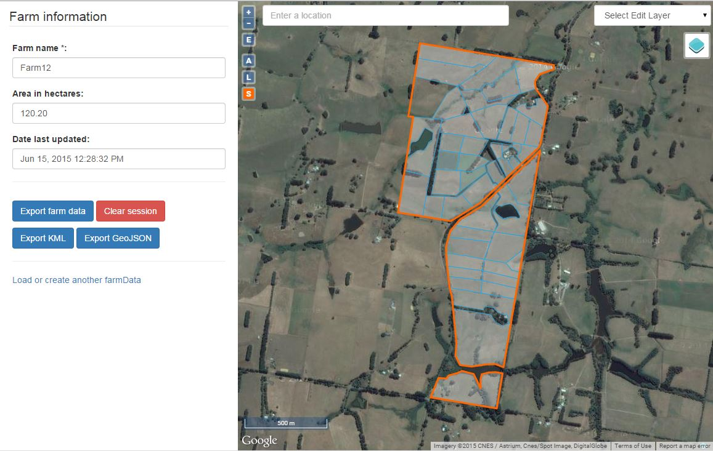

FarmBuild Web Mapping
This is the 'Web Mapping' module of FarmBuild JavaScript library. GITHUB Repo
The Web Mapping module has been designed as a stand alone web mapping sample that can be integrated into new or existing platforms.
The sample includes the ability to:
- address search
- create/edit a farm boundary
- create farm paddocks
- attribute farm paddocks
- assign farm paddocks to paddock groups through a defined list in an JSON file
- export mapping data as JSON through the farm data block JSON structure
- export mapping data as GeoJSON and KML formats

The Web Mapping Module has been designed to write the mapping data into a specified JSON structure called the 'Farm Data Block'.
Through the JSON structure, the JSON exports are interoperable with the other FarmBuild modules.
The Web Mapping module serves and an important platform to develop applications that contain data with a spatial context.